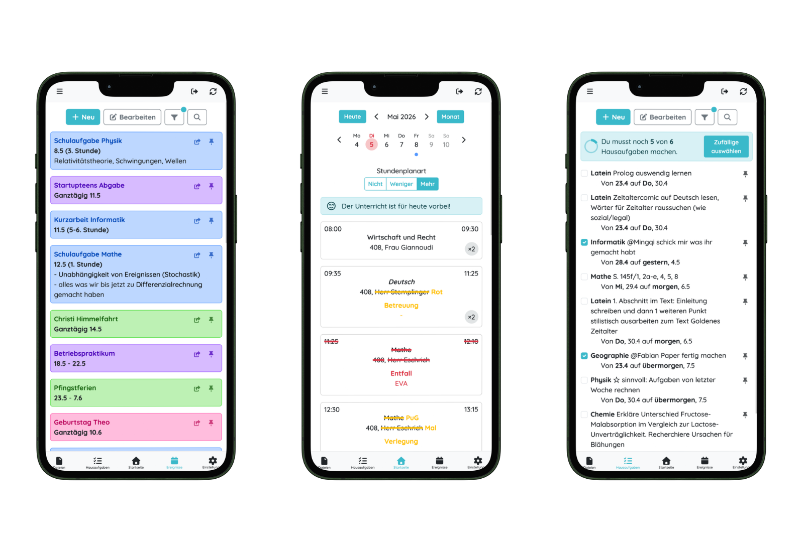
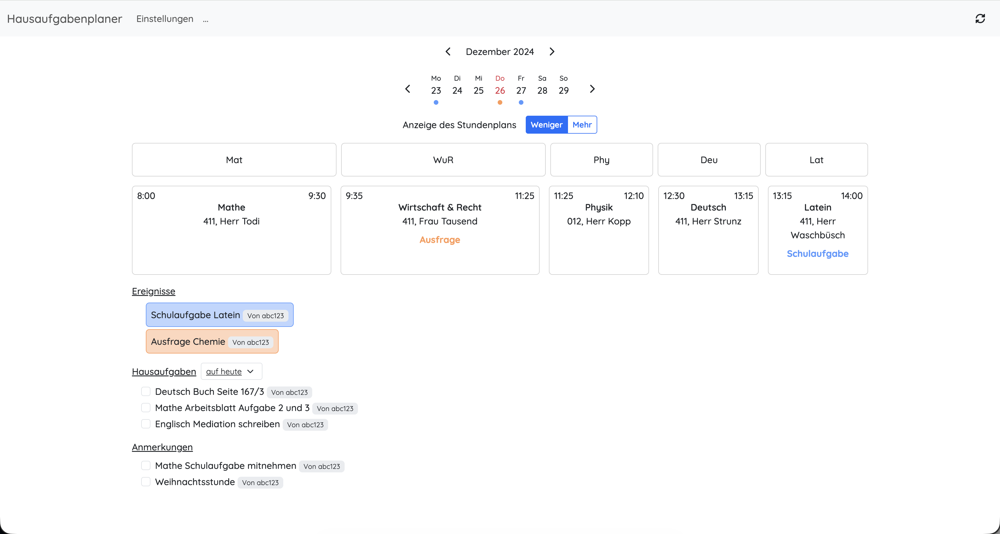

Product / Backend
TaskMinder
My class kept missing homework and exams because the information was everywhere. TaskMinder is our attempt to fix that.
- Role
- Co-founder & team lead · Backend · DevOps
- Timeline
- Dec 2024 - ongoing
- Stack
- Express.js · PostgreSQL · Redis · Docker
- Team
- Two co-founders
- Code
- Open source on GitHub

We were not ignoring our homework. Most of the time, we did not know it existed.
In my class, almost no homework was getting done. Tasks were passed around verbally, files lived in different places and the date of the next exam could disappear inside a WhatsApp chat. My old homework planner tells the story pretty well: entire weeks are simply empty.
I first thought people were simply forgetting to write things down. Then I looked at my own planner and realised I was doing exactly the same. The problem was not a lack of motivation: the information was scattered, easy to miss and hard to find again.
Everything we kept losing, in one place.
We built the first version for ourselves. I wanted to open one page before school and immediately know what was due, whether anything had changed and where the file I needed was.
That became the basic idea behind TaskMinder: homework, exams, events, class files and substitution plans together. We kept it close to the way our own school days actually work, instead of starting with a generic to-do list.
It began as a rough tool for our own class.
TaskMinder is built by my co-founder and me. I lead the project, write most of the backend and keep the deployment running. One of the trickier parts was bringing in substitution plans. I studied how DSBMobile communicates with its Untis-based system, and we checked our approach with both companies before using it.
Our early versions were rough, but that was useful. We could put them in front of classmates, watch where they got stuck and change things quickly. I learned more from those conversations than I would have from polishing the first version in private.

The code is public.
I wanted people to be able to see what we had actually built, so we made TaskMinder open source. The code is public on GitHub: anyone can inspect it, report a problem or build on our work. It also lets me show the technical side of the project, including the imperfect parts and the decisions we changed later.
Explore the source codePeople at school actually use it.
TaskMinder started to feel real when it became useful to people outside our two-person team. More than 80 people now use it on a typical day. Reaching the national top four in the Apps & Platforms category of the StartupTeens Challenge was exciting, but seeing people come back to the product each day means more to me.
Crop to the useful time range and hide any private data before adding it.